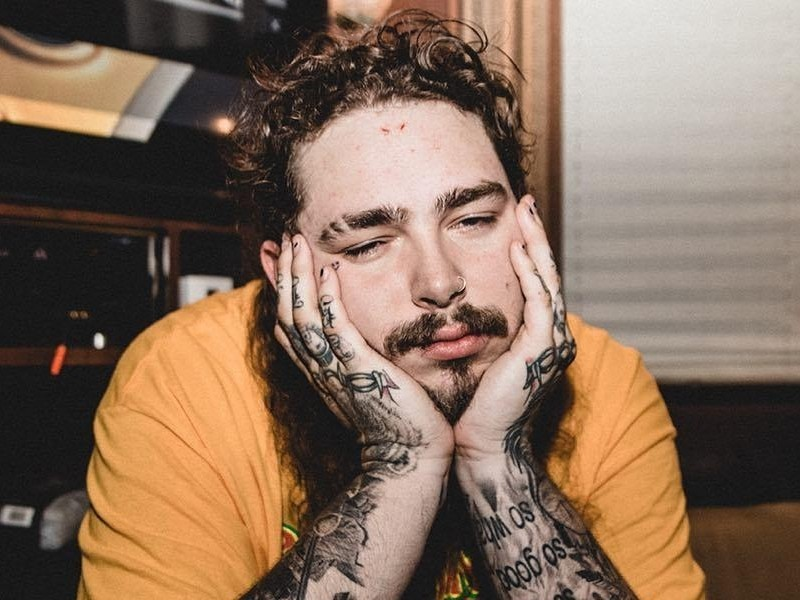

El comienzo de Miller como una celebridad comenzó en sus ya abandonados canales de YouTube: DizastaMusic, TooDamnFilthy y TVFilthyFrank, que consistían en canciones de rap, discursos, desafíos extremos, actuaciones de ukelele y un programa de humor negro
y escatológico titulado The Filthy Frank Show, con la mayoría de los personajes principales interpretados por él mismo. Para complementar su canal TVFilthyFrank, Miller produjo música conocida como el Harlem Shake, él fue directamente responsable del debut de la canción "Harlem Shake" de Baauer en el Billboard Hot 100. Muchas personalidades de YouTube han hecho apariciones importantes o cameo en The Filthy Frank Show, incluyendo h3h3Productions, iDubbbz, JonTron, Michael Stevens, y PewDiePie.3 En diciembre de 2017, Miller declaró que se retiraría de YouTube para centrarse en su carrera musical, bajo el nombre de Joji, produciendo música más matizada y trip hop.
Bad Omens
Primeros años
La idea de formar Bad Omens2 surgió en 2013, cuando Noah Sebastian comenzó a escribir letras en secreto y al mismo tiempo tocaba guitarra para Immortalize. En 2014, Noah Sebastian se apartó de su antigua banda, con Bad Omens a la vista.
Al año siguiente, en 2015, se contactó con un viejo amigo, Nicholas Ruffilo, para comenzar la banda.3 Luego agregó a otro compañero, Vincent Riquier, quien le presentó a un amigo de Suecia., Jolly Karlsson. Karlsson había conocido a Riquier a
través de sus compañeros de un antiguo proyecto de Riquier. Con esos cuatro miembros, el grupo se mudó de sus hogares en Suecia y Richmond. Karlsson tuvo la idea de hacer el cambio cuando un amigo suyo comenzó un pequeño sello discográfico que.
Post Malone

Según Post, eligió «Post Malone» como su nombre artístico cuando tenía 14 o 15 años. Se rumoreaba que el nombre era una referencia al jugador de baloncesto Karl Malone. En realidad fue el resultado de introducir su verdadero nombre en un generador de nombres de rap en línea.4 A los 16 años, usando Audacity, Post creó su primer mixtape, Young and After Them Riches. California, con su viejo amigo Jason Probst, un streamer profesional. Después de mudarse a Los Ángeles, Post, Probst y varios otros productores y artistas formaron el grupo musical BLCKVRD y grabaron música juntos.6 Varios miembros del grupo, incluido Post, se mudaron juntos a una casa en el Valle de San Fernando. Mientras vivía en el Valle de San Fernando, Austin conoció a 1st y Rich de FKi y Rex Kudo, que hicieron trabajos de producción en varios temas de Malone, uno de los cuales fue titulado «White Iverson».7 Malone grabó la canción dos días después de que la escribiera. «White Iverson» es, en parte, una referencia al jugador de básquet profesional Allen Iverson.8 En febrero de 2015, esta canción se cargó en la cuenta SoundCloud de Post.9 En julio de 2015, Malone lanzó el vídeo musical de «White Iverson», el cual recibió más de 761 millones de visitas. El sencillo recibió elogios de Mac Miller y Wiz Khalifa.10 Después del despliegue publicitario de «White Iverson», Post lanzó otros sencillos desde su SoundCloud, los cuales fueron «Too Young», «What's Up», «Patient» y «Tear$». Todos éstos experimentaron los mismos niveles de popularidad.
Después de obtener un millón de visitas al mes de lanzar «White Iverson», Post rápidamente atrajo la atención de las discográficas.8 En agosto de 2015, firmó un contrato de grabación


.svg)